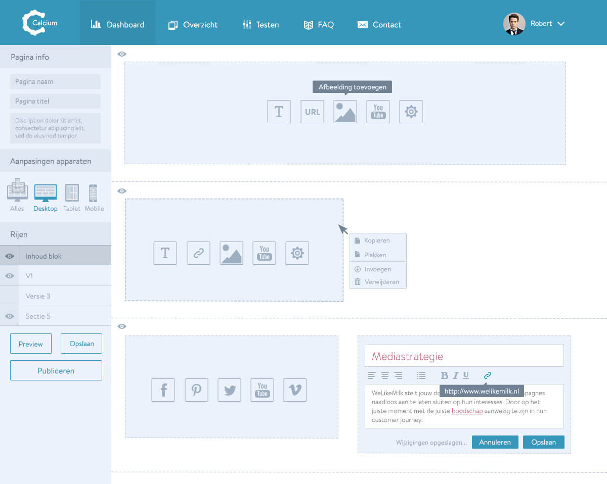

We aimed to address accurate communication of the company name, brand repositioning, and the merger of two unique brand experiences.Marc Billings, CEO @ Blackdove


Blackdove is a digital art platform featuring a vast, growing collection of cutting-edge works by the world’s most innovative artists. Users curate personalized collections in the mobile app marketplace and instantly enjoy a dynamic art experience on smart screens or via media players including Apple TV, Chromecast, Roku or Amazon Fire TV. Blackdove enables global art distribution, allowing artists and collectors to connect in a real time transaction.
Brand Design / February 2016 - Present